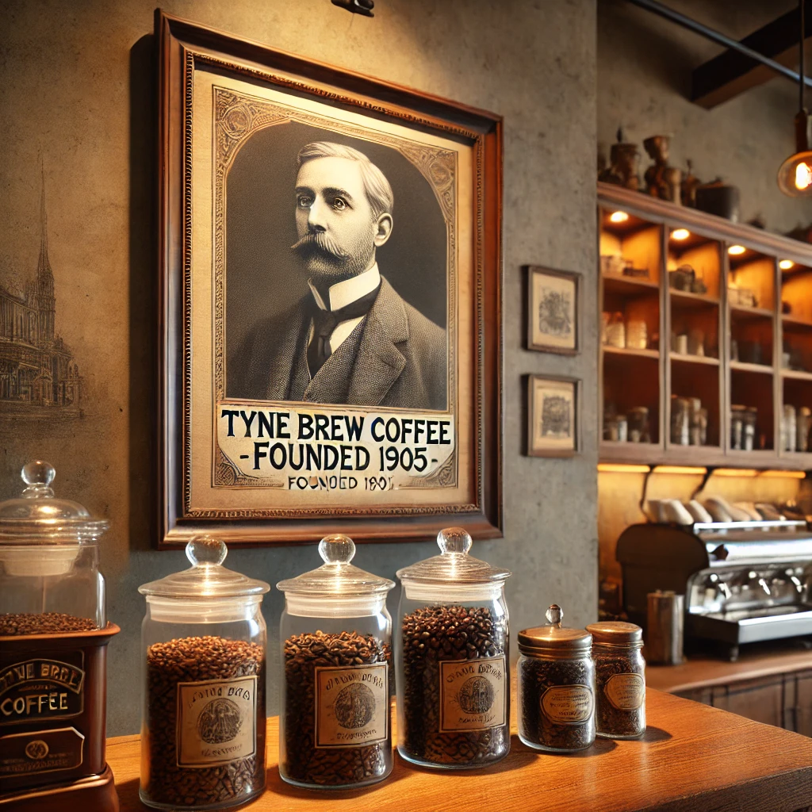

Rooted in Heritage
Over 100 years of family-led craft and care in every cup.
Rooted in Newcastle. Loved nationwide.
Tyne Brew Coffee was first founded by William Timothy Smith in 1905, right here on the banks of the River Tyne. Starting as a humble local coffee venture, William’s vision was simple: bring warmth, quality, and community to every cup served.
More than a century later, that legacy continues. His grandsons, Ian and David Smith, proudly carry the torch — expanding from a local favourite into a household name distributed across the UK.

William Timothy Smith believed coffee should be honest, hearty, and brewed with soul. His story is the beating heart of Tyne Brew — still guiding us, one cup at a time.
Tyne Brew Coffee founded by William Timothy Smith.
Second-generation roasting begins; expanded to local stockists.
Legacy passed to Ian and David Smith — the founder’s grandsons.
Nationwide distribution, new partnerships, and a new era of Tyne pride.
Over 100 years of family-led craft and care in every cup.
Born on the Quayside, proud of our Geordie roots.
Modern brews, sustainable thinking, and inclusive spaces.
We’re proud to collaborate with other long-standing North East favourites. One such partner is Ringtons — a family business like ours, renowned for their teas and biscuits since 1907.
Our shelves now feature exclusive Ringtons products, including their legendary Biscuit Selection Box, available to enjoy in-house or take home.